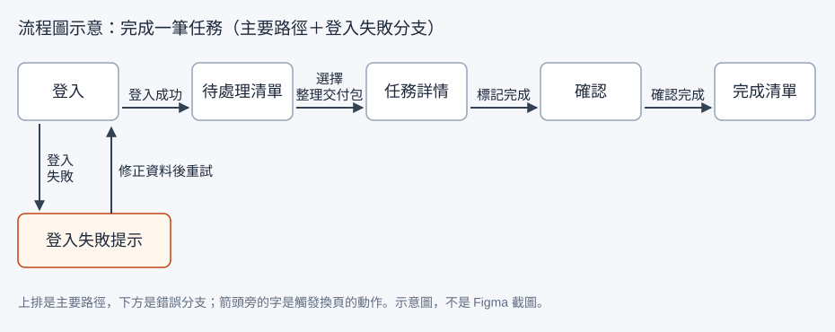

把需求畫成線框，再組成可測試的流程
工作室行政人員需要從登入走到待處理清單，先用線框釐清資訊，再把正式畫面設成可預覽的起點。
從做好的清單與彈窗接著規劃
工作室行政人員每天打開手機，先登入，再從待處理清單找到「整理交付包」。如果畫面各自都做得完整，卻沒有共同的任務順序，實際操作時仍可能找不到入口、看不懂下一步，或在清單與詳情之間迷路。這一頁先把需求縮成一條看得懂的路，再讓 Figma 從正確的畫面開始預覽。
你會用到先前做好的登入表單、待處理清單、任務詳情、確認彈窗與完成後清單。先打開本堂起始材料，對照工作情境與既有畫面；完成後再用本堂完成檢查表逐項確認。所有成果都留在同一個 Figma 檔案的同一頁，畫布上的線框放在正式畫面旁邊，之後接線時就能直接比對。
開始前先在畫布上找到五個內容：登入、清單、詳情、確認彈窗與完成清單。這裡先處理「登入後看見清單」這一段，其他畫面先保留位置與名稱。把範圍縮小，能讓你分清楚資訊規劃與原型互動：今天先決定畫面要說什麼，下一步才是讓按鈕真的能點。
線框先回答問題，原型再回答操作
這一節要分清楚任務卡、線框與原型各自解決的問題。任務卡說明「誰要完成什麼」；線框安排「畫面上先看到什麼」；原型則讓人實際點擊，檢查「按下去會去哪裡」。三者連在一起，設計決定才有可追溯的理由。
例如，行政人員的目標是完成一筆待處理任務。登入畫面需要讓人辨認帳號、密碼與登入動作，清單畫面需要讓人先看到頁面名稱、任務標題與進入詳情的線索。線框使用灰階區塊與文字即可，因為這時要檢查的是內容、順序與位置；品牌色、陰影與精細圖示稍後沿用正式元件。
| 產物 | 要回答的問題 | 這個情境的判斷方式 |
|---|---|---|
| 任務卡 | 誰在什麼情況下，要完成什麼 | 讀完能說出使用者、起點、目標與限制 |
| 登入線框 | 第一步需要哪些資訊與動作 | 看得到兩個欄位與清楚的登入動作 |
| 清單線框 | 登入後先看到哪些任務資訊 | 頁面標題、三筆任務與底部導覽有明確層級 |
| 流程箭頭 | 畫面預期如何銜接 | 箭頭從登入指向清單，旁邊寫出動作 |
| Prototype（原型）起點 | 預覽從哪張正式畫面開始 | Preview 開啟後先看見登入表單 |
線框的好壞不在於畫得像成品，而在於能否提早暴露問題。兩個按鈕同樣醒目時，使用者可能不知道哪個是主要動作；任務標題與期限擠成一團時，使用者可能先看到不重要的資訊；清單沒有頁面名稱時，登入後也可能不知道自己到了哪裡。這些問題在灰階畫面就能看見，修正成本也比完成所有視覺細節後更低。
原型起點則像一個指定入口。第一次把兩個尚未連線的 Frame 連起來時，Figma 會在起點 Frame 自動建立「Flow 1」。這堂的工作是把它改名為「完成一筆任務」，讓之後每次預覽都能從內容辨認用途。若要另開一條練習流程，才選取最外層 Frame，在 Prototype 分頁的 Flow starting point 點加號。

設計工具也有清楚分工。Figma Design 適合製作介面畫面、元件與可點擊原型，是這門課的主要工作空間。FigJam 適合用便利貼、流程圖與連線整理想法，複雜流程可先在那裡討論，再把確認後的畫面做進 Figma Design。Photoshop 擅長修整照片、去背與處理點陣圖；它產出的圖像可放進介面，畫面結構仍回到 Figma Design 管理。VS Code 用來編輯 HTML、CSS 與 JavaScript，等到設計要實作成網站時才使用。選工具的判準是工作內容，而非把每件事都塞進同一套軟體。
示範：從任務卡畫出登入與清單
這一節把工作情境轉成可檢查的線框。先看規格表，再逐步操作；表格集中放尺寸、名稱與文字，步驟只處理一個動作。
| 類別 | 名稱或設定 | 本堂值 |
|---|---|---|
| 任務卡 | 使用者 | 工作室行政人員 |
| 任務卡 | 起點 | 登入畫面 |
| 任務卡 | 目標 | 找到「整理交付包」，查看內容並標記完成 |
| 任務卡 | 限制 | 手機操作；使用示範內容；不連接資料庫 |
| 線框 | Wireframe / Login（登入線框） | 402 × 874 |
| 線框 | Wireframe / List（清單線框） | 402 × 874 |
| 登入內容 | 欄位 | 帳號、密碼；高度 48 |
| 登入內容 | 左右邊界 | 24 |
| 清單內容 | 畫面標題 | 待處理清單 |
| 清單內容 | 任務列 | 整理交付包、確認活動報名資料並補上聯絡電話、更新本週任務說明 |
| 清單內容 | 導覽 | 底部導覽區 |
| 正式畫面 | Screen / Login（登入畫面） | 流程起點 |
| 流程 | 名稱 | 完成一筆任務 |
- 在正式登入畫面旁新增手機 Frame，命名為
Wireframe / Login（登入線框）。做完會看到一張與正式手機畫面同尺寸的空白線框。 - 在登入線框內放入頁面標題、兩個灰色欄位區塊與一個按鈕區塊。做完會依序看見「登入」「帳號」「密碼」與「登入」動作。
- 將兩個欄位區塊設為規格表中的高度，並保留左右邊界。做完會看到欄位與手機邊緣之間有一致空間。
- 在旁邊新增第二個手機 Frame，命名為
Wireframe / List（清單線框）。做完會得到另一張可安排登入後內容的空白畫面。 - 在清單線框加入「待處理清單」、三列任務區與底部導覽區。做完會先看見頁面名稱，再由上而下讀到三筆任務。
- 在兩張線框之間畫一個由登入指向清單的箭頭，旁邊寫「按下登入」。做完會看見動作與畫面去向的關係。
- 在線框旁建立任務卡，依規格表寫下使用者、起點、目標與限制。做完能只看任務卡說出這條流程為何存在。
- 從登入線框開始走讀，依序指出帳號、密碼、登入、清單標題與「整理交付包」。做完會得到一條口頭可說完、畫面上也找得到的閱讀路徑。
- 若走讀時視線先落在次要內容，調整大小、位置或文字層級。做完後，主要動作與第一筆任務會比裝飾更容易辨認。
示範完成時，兩張線框應該能在幾秒內說清楚：「行政人員在登入畫面填寫資料，按下登入後，進入待處理清單，再找到整理交付包。」這句話也會成為後續接線與測試的基準；如果畫面上找不到句子中的某一項，就回到對應線框補齊。
跟著做：用正式畫面建立流程起點
現在把提示減少，將剛才的線框決定對回正式畫面。這一步先確保入口與畫面內容一致，連線會在下一頁完整處理。
- 找到正式登入畫面，確認裡面有帳號欄位、密碼欄位與登入按鈕。畫面內容應與登入線框的閱讀順序一致。
- 找到正式清單，核對三筆任務的中文標題。第一筆應是「整理交付包」，第二筆與第三筆也要有各自內容。
- 依任務卡查看詳情、確認彈窗與完成清單。這些畫面先用內容確認角色，讓後續目的地容易辨認。
- 從登入按鈕拖出原型連線到清單最外層 Frame。完成連線後，登入畫面旁會出現自動建立的流程起點標籤。
- 選取流程起點並把「Flow 1」改名為「完成一筆任務」。完成後，畫布與 Flows 清單都會顯示能辨認內容的中文名稱。
- 取消選取所有物件，在右側 Prototype 分頁的 Flows 清單點「完成一筆任務」。你也可以點畫布上起點標籤旁的藍色播放圖示。
- 開啟 Preview（編輯器內預覽），快捷鍵是 Shift+Space；也可以點右上角播放鍵旁的小箭頭選 Preview。直接按播放鍵會改用 Present 另開分頁。完成後，預覽的第一張畫面會是正式登入表單。
- 比對線框與正式畫面，記下視覺細節改變了什麼、資訊順序保留了什麼。完成後，你會有一段說明設計決定的短紀錄。
Figma 會自動儲存這些調整。關閉預覽再回到畫布時，流程起點與線框都應留在同一頁；這能讓你下一次打開檔案，直接從「完成一筆任務」繼續工作。
看兩組線框，判斷哪一組比較能工作
版本一的登入線框有帳號與密碼，但三個灰色區塊大小相同，按鈕只寫「下一步」。進入清單後，畫面最上方放大型裝飾圖，三筆任務只顯示期限，底部才出現任務標題。流程箭頭從登入畫面邊緣指向清單，旁邊沒有動作文字。
版本二的登入線框把欄位與「登入」動作分成清楚層級。清單上方先寫「待處理清單」，每列先顯示任務名稱，再補期限與進入詳情的線索。箭頭從登入按鈕指向清單，旁邊標示「按下登入」。你認為哪一版比較適合拿去接原型？請先用「能否辨認起點、主要動作與下一張畫面」三個角度回答。
看完自己的判斷再展開
版本二較適合。它把輸入、主要動作、頁面名稱與任務標題排成可追蹤的順序，箭頭也說明是哪個動作造成畫面改變。版本一即使有全部區塊，仍需要猜測「下一步」是什麼，清單也先讓裝飾與期限搶走注意力。
卡住時，先看你正在處理哪一層
這一節把常見問題分成任務、線框與原型三層。先辨認現象屬於哪一層，再回到對應位置修正，會比在整張畫布中逐一亂點更快。
| 看到的現象 | 通常的原因 | 怎麼修 |
|---|---|---|
| 任務卡讀完仍不知道要完成什麼 | 只寫了功能名稱，缺少使用者與目標 | 改成「工作室行政人員從登入開始，找到整理交付包並標記完成」 |
| 線框看起來像一堆相同方塊 | 缺少內容標籤與主要動作層級 | 補上欄位、頁面名稱與動作文字，再調整重要性 |
| 畫了箭頭，Preview 裡卻無法點 | 箭頭只是流程說明 | 從正式按鈕建立 Prototype 連線到目標 Frame |
| Preview 從清單開始 | 流程起點放在清單 | 選登入最外層 Frame，將流程起點設回登入 |
| Flows 清單只看見 Flow 1 | 起點尚未改名 | 把流程名稱改成「完成一筆任務」 |
| 找不到剛做的畫面 | 多個 Frame 沿用預設名稱 | 依規格表命名線框與正式畫面，在 Layers 搜尋內容詞 |
換你做：報名確認 App
活動主辦單位的行政人員要用手機逐筆確認報名資料。你已經有 360 × 800 的報名 App 畫面與報名清單，現在要把其中一條任務說清楚，再用線框規劃「從清單看一筆資料」的開始方式。資料以報名資料為準。
要達成的條件：
- 寫一張任務卡，只交代使用者、起點、目標與限制。
- 任務目標使用真實內容稱呼，例如找到張家豪的報名並查看備註。
- 畫兩張線框，一張是報名清單，一張是報名詳情。
- 清單線框能辨認姓名、狀態與進入詳情的動作。
- 詳情線框能辨認姓名、備註、狀態與返回清單的動作。
- 從清單正式畫面建立新的 Flow starting point，名稱要讓人知道是報名確認流程。
- 所有成果都放在既有課程檔案的同一頁。
合格的結果要能通過以下自我檢查：
- 只看任務卡，就能說出行政人員要找哪一筆資料與為什麼。
- 只看兩張線框，就能指出先看清單、再看詳情的閱讀順序。
- 線框保留內容與動作，沒有靠色彩或精細圖示才能理解。
- Preview 從報名清單開始，首畫面與任務卡起點一致。
- 張家豪的長備註在詳情線框有足夠位置，內容沒有被省略成不明縮寫。
真的卡住再看：提示
先把任務卡中的名詞圈起來，逐一檢查線框上是否找得到；再選報名清單最外層 Frame，到 Prototype 分頁找 Flow starting point。
把線框留成後續每次判斷的地圖
你已經把「行政人員登入後找到整理交付包」從一句需求，整理成任務卡、兩張線框與一個中文流程起點。這些成果是後續接互動時的地圖：每條連線都要能回到任務目標，每個目的地都應在線框中有理由。
下一頁會把登入、清單、兩筆不同任務的詳情與返回真正連起來。屆時會沿用「完成一筆任務」的入口，逐一設定點擊、動作與目的地，並故意連錯一個目的地來練習排查。
想一想：如果正式畫面已經很好看，為什麼仍值得先保留簡單線框？
看參考答案
線框把注意力放在內容、順序與動作，能較快發現入口不清、資訊缺漏與畫面關係錯誤；正式畫面則負責視覺與元件細節。保留線框也能讓後續每條互動都有可回看的設計理由。
完成條件：
- 任務卡清楚交代工作室行政人員、登入起點與完成一筆任務的目標。
- 登入與清單線框能看出資訊層級、主要動作與畫面順序。
- 「完成一筆任務」流程從正式登入畫面開始，Preview 首畫面正確。
- 報名確認練習有自己的任務卡、兩張線框與流程起點。
本堂查證來源
來源查證：2026-11-02。